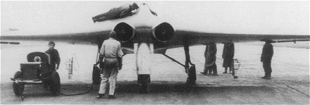
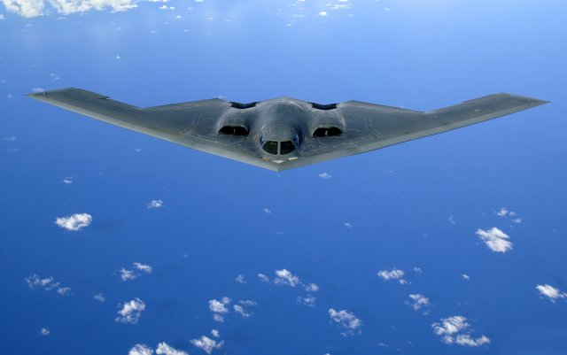

WWII Stealthy Flying Wing
The Northrop Grumman B-2 is the epitome of a stealthy flying wing. However, a recent study has shown that the Horton Ho 229, a World War II (WWII) flying-wing prototype, also shared a number of characteristics with the B-2, including stealth - 45 years prior to the first flight of the B-2.
Horton Ho 229
Stealth is the ability to evade radar detection by reducing the Radar Cross-Section (RCS) of an object, such as an aircraft. Specifically, a stealthy design prevents the electromagnetic waves emitted by a radar transmitter from bouncing directly back to the radar's receiver. The two main features in stealth design are shape and coatings - the B-2 uses both to achieve its low RCS.
During WWII the need for a stealthy airplane, such as the Horton, was driven by the effectiveness of the British radar system (Chain Home) at locating German airplanes crossing the English Channel. Much of the credit for Britain 'winning' (surviving) the Battle of Britain lies with the invention and effective use of radar. Whether the designers of the Horton specifically set out to minimize its RCS is debatable. The choice of a flying wing with embedded turbojet engines was likely driven by aerodynamic efficiency concerns (high lift-to-drag ratio) in order to maximize range. The fact that flying wings tend to be inherently more stealthy than conventional airplanes with rudders and tails may have been coincidental in the case of the Horton. However, the Horton had wooden-composite wings that incorporated a layer of carbon along each leading-edge, which is known to absorb electromagnetic radiation, such as that emitted by radar transmitters. This carbon layer provides circumstantial evidence of a rudimentary knowledge of stealth among the Horton designers.
Northrop Grumman B-2 SpiritImage courtesy of US Air Force
In an attempt to answer just how stealthy the Horton was, a recent National Geographic documentary called "Hitler's Stealth Fighter" followed a Northrop team as they reconstructed a full-size mockup of the Horton and evaluated it on an RCS test range. The tests revealed that the Horton's RCS was significantly smaller (60% smaller to be precise) than that of the Luftwaffe's mainstay fighter the Messerschmitt Bf 109. Experts speculate that the Horton could have evaded Chain Home and been an effective weapon had it gone into full production.
It's amazing to think that the Horton was designed prior to the invention of Computational Fluid Dynamics (CFD) and Computational Electromagnetics (CEM). The latest stealth airplanes, such as the Lockheed F35, would be inconceivable today without advanced Computer-Aided Engineering (CAE) analysis tools.
Feedback
Questions? Ideas? Problems?

Recent blog posts
- CFD Simulates Distant Past
- Background on the Caedium v6.0 Release
- Long-Necked Dinosaurs Succumb To CFD
- CFD Provides Insight Into Mystery Fossils
- Wind Turbine Design According to Insects
- Runners Discover Drafting
- Wind Tunnel and CFD Reveal Best Cycling Tuck
- Active Aerodynamics on the Lamborghini Huracán Performante
- Fluidic Logic
- Stonehenge Vortex Revealed as April Fools' Day Distortion Field
 Get our Blog feed
Get our Blog feed{kind=link}